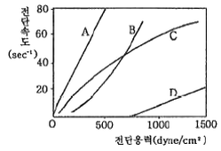
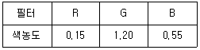

인쇄기사 (2008-07-27 기출문제)
1과목: 인쇄공학
1. 계면(界面)에서 양쪽성 물질이 친수기는 물 쪽으로, 친유기는 기름 쪽으로 늘어서는 현상을 무엇이라 하는가?
- 흡착(adsorption)
- 표면활성(surface activation)
- 배향(orientation)
- 중합(polymerization)
(정답률: 알수없음)

2. 망점 주변의 길이가 4μm 이고, 망점의 면적이 2.5 μm2 이면 형상계수는 약 얼마인가?
- 0.5
- 1.0
- 3.6
- 6.4
(정답률: 알수없음)
3. 다음 중 인쇄용지에 정전기 현상이 일어나는 요소로 가장 관계가 있는 것은?
- 용지의 온·습도
- 용지의 색상과 광택
- 용지의 기공도
- 용지의 평활도
(정답률: 알수없음)
4. 다음 중 초킹(chalking) 현상이 가장 많이 발생할 수 있는 경우는?
- 인쇄잉크 중 종이에 바니시의 침투량이 많을 때
- 인쇄잉크 중 종이에 안료의 침투량이 많을 때
- 인쇄잉크 중 종이에 바니시의 침투량이 적을 때
- 인쇄잉크 중 종이에 안료의 침투량이 적을 때
(정답률: 알수없음)
5. Walker-Fetsko 잉크 전이방정식에서 잉크의 피복저항에 대한 설명으로 옳은 것은?
- 인쇄압력이 증가하면 피복저항은 감소한다.
- 인쇄속도가 증가하면 피복저항은 감소한다.
- 피복저항이 증가하면 필요 최저잉크량은 감소한다.
- 평활도와 피복저항은 직접적인 관계가 없다.
(정답률: 알수없음)
6. 양면을 한 번에 코팅할 필요가 있을 때 코팅 용액에 적셔서 프레스 롤 사이를 통과시켜 코팅하는 방법은?
- 롤 코팅
- 그라비어 코팅
- 딥 코팅
- 익스트루젼 코팅
(정답률: 알수없음)
7. 다음 그래프는 여러 가지 물질에 대한 유동 특성을 나타낸 것이다. 이 중에서 뉴톤성 유동을 하는 물, 알코올, 아세톤, 키시렌 및 저분자 물질 용액에 해당되는 것은?

- A
- B
- C
- D
(정답률: 알수없음)
8. 잉크를 중첩할 때 먼저 인쇄한 잉크가 뒤에 인쇄하는 잉크를 부착하는 정도를 무엇이라고 하는가?
- Piling
- Mottling
- Trapping
- Flocculation
(정답률: 알수없음)
9. 제책 공정에서 속장과 겉장을 연결하는 부분으로, 속장의 내구력을 좌우하는 공정은?
- end paper
- gathering
- pressing
- gluing
(정답률: 알수없음)
10. 안전색을 사용할 때 빨강(5R 4/13)으로 표시하지 않는 것은?
- 기계방호물
- 정지신호
- 화학물질 취급장소에서의 유해·위험 경고
- 소화설비 및 그 장소
(정답률: 알수없음)
11. 화재의 종류에 따른 화재 급수를 옳게 나타낸 것은?
- 금속화재 – A급
- 일반화재 – B급
- 전기화재 – C급
- 유류화재 – D급
(정답률: 알수없음)
12. 정전기의 방지대책으로 옳지 않은 것은?
- 접지를 하여 전하의 축적을 막는다.
- 절연저항을 높인다.
- 제전기를 사용한다.
- 공정의 속도를 낮춘다.
(정답률: 알수없음)
13. 제책 공정 중에서 본문과는 별도로 인쇄하여 본문의 전, 후 또는 중간에 그림, 컬러사진, 속표지, 접어넣기 등을 끼워 넣는 작업은?
- 접기
- 딴쪽접기
- 쪽맞추기
- 면지붙이기
(정답률: 알수없음)
14. 어떤 인쇄에서 인쇄판에 공급된 잉크량이 4g/m2, 인쇄판에서 종이로 전이된 잉크량이 1.9g/m2일 때, 인쇄판과 종이사이의 잉크 전이계수는 약 얼마인가?
- 0.5
- 0.9
- 1.9
- 2.1
(정답률: 알수없음)
15. 다음 중 인쇄 잉크에 대한 항복값의 단위를 옳게 나타낸 것은?
- dyne/cm2
- dyne/m3
- Joule/cm
- Joule/cm2
(정답률: 알수없음)
16. 캐치프레이즈나 마크 혹은 로고타이프 등의 문자를 만드는데 사용되며, 문자형의 종륟 다양하고 여러 가지로 짜맞추기가 쉬워서 화살표, 장식선 분야에 활용되는 것은?
- 스크린 톤(screen tone)
- 인스턴트 텍스(instant tax)
- 마스킹 필름(masking film)
- 인스턴트 레터링(instant lettering)
(정답률: 알수없음)
17. 잉크에 전단응력(Shear stress)이 50dyne/cm2로 주어졌을 때, 전단속도(Shear rate)가 25sec-1 이었다. 이 잉크의 점도는 몇 poise 인가?
- 0.5
- 1
- 1.5
- 2
(정답률: 알수없음)
18. 잉크 전이 방정식 중 Walker-Fetsko의 전이 방정식에 포함되지 않는 적성 계수는?
- 농도 평활성 상수(m값)
- 용지의 피복 면적비(k값)
- 고정화 잉크량(b값)
- 자유 잉크의 분열(f값)
(정답률: 알수없음)
19. 일정한 스트레스 이상을 가해야 유동을 시작하는 흐름의 형태로서 고점도 오프셋 해당되는 유동 형태는?
- 소성 유동
- 뉴톤성 유동
- 의소성 유동
- 딜라턴트 유동
(정답률: 알수없음)
20. 2색 트래핑(trapping)에 관한 설명 중 틀린 것은?
- 트래핑은 중첩에 의한 색 재현을 의미한다.
- 첫 번째 인쇄한 잉크가 두 번째 인쇄한 잉크보다 택 값이 커야 한다.
- 첫 번째 인쇄한 잉크보다 두 번째 인쇄한 잉크가 투명성이 좋아야 한다.
- 첫 번째 인쇄한 잉크보다 두 번째 인쇄한 잉크가 은폐력이 커야 한다.
(정답률: 알수없음)
2과목: 인쇄재료학
21. 종이 제조시 비팅(beating) 공정을 가장 옳게 설명한 것은?
- 소수성을 가지도록 콜로이드 물질로 감싸는 작업
- 펄프를 물속에서 기계적으로 두들겨 분산시키는 작업
- 광물성 충진재를 넣는 작업
- 표면에 광택을 내기 위한 작업
(정답률: 알수없음)
22. 준비된 펄프를 이용하여 종이를 제조하는 공정 순서를 옳게 나타낸 것은?
- 압착 – 탈수 – 건조 – 광택
- 건조 – 압착 – 탈수 – 광택
- 건조 – 탈수 – 압착 – 광택
- 탈수 – 압착 – 건조 – 광택
(정답률: 알수없음)
23. 종이의 휨 강도(stiffness)를 증가시키는 방법으로 가장 옳은것ㅇㄴ?
- 전료(Filler)의 함량을 증가시킨다.
- 평량이 일정한 상태에서 두께를 증가시킨다.
- Wet Pressing을 감소시킨다.
- Calendering을 증가시킨다.
(정답률: 알수없음)
24. 인쇄 잉크의 조성 중 프탈산디옥틸, 프탈산디부틸 등과 같이 비이클에 포함되어 유동성을 조정하기 위해 사용하는 것은?
- 드라이어
- 가소제
- 빅토리아
- 계면활성제
(정답률: 알수없음)
25. 인쇄 공정에서 발생하는 picking 현상 방지를 위하여 종이 제조시에 취하는 조치로 가장 거리가 먼 것은?
- 고해(refining)를 많이 한다.
- 양성전분 투입량을 늘린다.
- AKD의 투입량을 늘린다.
- 표면에 전분 도포량을 늘린다.
(정답률: 알수없음)
26. 다음 중 비이온 계면활성제가 아닌 것은?
- 라우릴산나트륨
- 지방산 에틸렌옥시드
- 모노글리세리드
- 고급알코올 에틸렌옥시드
(정답률: 알수없음)
27. 흰 종이에 건조된 잉크를 묻혀 20~25℃에서 1.2~5%의 수산화나트륨 수용액에 30분간 담갔다가 종이와 용액의 색깔을 보고 판정하는 시험은?
- 내알칼리성
- 내침투성
- 내광성
- 내유화성
(정답률: 알수없음)
28. 일반적으로 후계량 방식으로 도공속도가 빠르며, 도공지의 표면이 평활하여 매끄러운 도공 단면을 얻을 수 있으나 울퉁불퉁한 원지로 도공하는 경우 도공막의 두께가 불균일하여 인쇄얼룩(print mottle)이 발생할 우려가 가장 높은 도공방식은?
- 롤 코터(roll coater)
- 블레이트 코터(blade coater)
- 블랭킷 코터(blanket coater)
- 에어나이프 코터(air knife coater)
(정답률: 알수없음)
29. 국판전지(636×939mm) 1장의 무게가 71.7g 일 때, 이 종이의 평량은 약 몇 g/m2인가?
- 80
- 100
- 110
- 120
(정답률: 알수없음)
30. 다음 중 IGT 인쇄적성시험기로 시험하기 가장 어려운 항목은?
- 잉크전이량
- 뜯김(picking)성
- 역전이(back-trap)
- 다색인쇄 얼룩(mottle)
(정답률: 알수없음)
31. 양면 도공된 120g/m2의 도공지를 제조하고자 한다. 이때 사용할 원지가 80g/m2 이라면 한쪽 면에만 도피된 도공량은 몇 g/m2 인가?
- 10
- 20
- 30
- 40
(정답률: 알수없음)
32. 도공기에서 일정한 도공량이 도피된 종이에 평활성과 광택도를 효과적으로 부여하기위해 반드시 거쳐야 되는 공정은?
- 압착 공정
- 탈수 공정
- 재단 공정
- 광택 공정
(정답률: 알수없음)
33. 다음 잉크의 내성 중 고압중기, 살균 등에 견디는 성질을 무엇이라 하는가?
- 내광성
- 내용제성
- 내마찰성
- 내레토르트성
(정답률: 알수없음)
34. 잉크의 점도를 측정하는 장치로 일정한 용적의 컵 밑에 구멍을 뚫어 시료가 구멍에서 유출되는 수를 측정하는 것으로, 그라비어나 플렉소용 인쇄 잉크의 점도를 측정하는데 주로 사용되는 것은?
- 라레 점도계
- 밴드비스코 미터
- 잔컵 점도계
- 잉코미터
(정답률: 알수없음)
35. 인쇄용 롤러는 인쇄적성에 따른 용도에 따라 경도가 결정되는데, 평판 오프셋 잉크 로울러나 코팅 로울러의 쇼어경도(shore hardness)는?
- 0 ~ 20
- 20 40
- 40 ~ 60
- 60 ~ 80
(정답률: 알수없음)
36. 다음 화상기록재료 중 비감광성 기록재료가 아닌 것은?
- 감열기록재료
- 강압기록재료
- 전기감응기록재료
- 서모그래피기록재료
(정답률: 알수없음)
37. 수지, 건성유, 용제, 겔제로 조성된 것으로 평판잉크에 10% 이내로 첨가되어 잉크에 탄성을 가지게 하며, 인쇄적성이나 망점재현성을 향상시키는 인쇄잉크의 보조제는?
- 계면활성제
- 겔 비이콜
- 리듀서
- 드라이어
(정답률: 알수없음)
38. 지기(종이 상자) 인쇄에 사용하는 잉크로 건조가 빠르고 뒤묻음이 없으며, 광택이 우수하고 내마찰성을 가지는 잉크는?
- 적외선 건조형 잉크
- 카턴 잉크
- 표준색 잉크
- 프로세스 잉크
(정답률: 알수없음)
39. 종이의 내수도를 나타내는 지표로서, 잉크와 물 등의 침투에 대한 저항도를 무엇이라 하는가?
- 투기도
- 평활도
- 거칠음도
- 사이즈도
(정답률: 알수없음)
40. 잉크의 성분 중 일반적으로 가소제가 갖추어야 할 특성이 아닌 것은?
- 무색, 무취, 무해할 것
- 수지와의 용해성이 좋고, 가소화 효율이 좋을 것
- 휘발성이 좋고, 내유성이 우수할 것
- 내열성, 내광성, 내균성이 있을 것
(정답률: 알수없음)
3과목: 특수인쇄학
41. PS, ABS, AS 수지 인쇄시 불량 인쇄물이 발생하였을 경우에 즉시 닦아내어 재사용하려고 할 때 사용하는 약품은?
- 부틸셀로솔브
- 디아세톤알코올
- 니트로벤젠
- 염산
(정답률: 알수없음)
42. 금속 인쇄용에 사용되고 있는 화학처리강판(TFS plate)의 층 구성을 옳게 나타낸 것은?
- 금속크롬층 + 크롬수화산화물총
- 주석도금층 + 면실유층
- 주석도금층 + 크롬이온층
- 금속크롬층 + 면실유층
(정답률: 알수없음)
43. 수표나 어음 등에 자기잉크를 이용한 비즈니스 폼 인쇄에 사용되는 용지는?
- OCR
- OMR
- MICR
- OTR
(정답률: 알수없음)
44. 스크린 2도 인쇄시 사진 분해필름의 각도가 15° 일 때, 무아레 방지를 위해 스크린사의 각도는 얼마로 하는 것이 가장 바람직한가?
- 15°
- 22°
- 30°
- 37°
(정답률: 알수없음)
45. 오목점의 면적은 동일하고 원고의 농담에 따라 깊이를 다르게 하여 잉크량의 변화에 따라 농담을 재현하는 그라비어 제판방식은?
- Halftone gravure
- Dultgene gravure
- Hard-dot gravure
- Conventional gravure
(정답률: 알수없음)
46. 다음 액정인쇄 잉크의 성분 중 바인더의 재료가 아닌 것은?
- 폴리비닐알코올
- 수성알키드수지
- 젤라틴
- 아크릴아미드
(정답률: 알수없음)
47. 금속인쇄잉크의 일반적인 건조온도와 건조시간으로 알맞은 것은?
- 130~150℃에서 8~10분
- 210~240℃에서 8~10분
- 250~280℃에서 10~15분
- 280~340℃에서 10~15분
(정답률: 알수없음)
48. UV 경화형 잉크에 사용되는 안료의 색상에 따라서 경화속도가 달라지는데, 다음 중 경화속도가 빠른 것부터 차례대로 옳게 나타낸 것은?
- 마젠타 → 옐로우 → 시안 → 블랙
- 블랙 → 마젠타 → 시안 → 옐로우
- 옐로우 → 시안 → 마젠타 → 블랙
- 시안 → 마젠타 → 옐로우 → 블랙
(정답률: 알수없음)
49. 전자조각 그라비어 제판 방식이 아닌 것은?
- 헬리오(Hellio) 조각 방식
- 오하이오(Ohio) 조각 방식
- 발커스(Valcus) 조각 방식
- 부메랑(Boomerang) 조각 방식
(정답률: 알수없음)
50. 플렉소 인쇄기 중 인쇄유닛마다 압통이 같고, 수평방향으로 배치되어 있으며, 유니트간의 거리가 길기 때문에 건조기 등의 설치가 쉬우며 여러 기계를 동시에 연결할 수 있는 형식은?
- 인라인형
- 스톡형
- 아웃라인형
- 드럼형
(정답률: 알수없음)
51. 플렉소 인쇄 중 판통에 잉크를 공급하기 위해서 사용하는 로울러는?
- 잉크 묻힘 로울러
- 전이 로울러
- 브러쉬 로울러
- 아닐록스 로울러
(정답률: 알수없음)
52. 주사기에 물을 넣어 피스톤으로 물방울을 뿜어내는 방식으로 이와 같은 원리를 이용하여 화상을 형성시켜 종이 등에 인쇄하는 방식은?
- 잉크 제트 인쇄
- 정전 인쇄
- 스크린 인쇄
- 평판 인쇄
(정답률: 알수없음)
53. 실린더의 셀로부터 전이된 그라비어 잉크가 스크린의 망점 부분으로 흘러 채워져야 할 새도우부로 잉크가 흐르지 않고 각각의 스크린에 얼룩이 나타나는 현상으로 주로 잉크 건조가 빠르거나 잉크의 점도가 높을 때 발생하는 현상은?
- 모틀링(mottling)
- 스크리닝(screening)
- 컬러 매칭 미스(color matcking miss)
- 블로킹(blocking)
(정답률: 알수없음)
54. FPC(flexible printed curcuit) 배선판 베이스로 주로 사용되는 소재로 가장 적합한 것은?
- 알루미늄
- 세라믹제
- 구리
- 폴리에스테르 필름
(정답률: 알수없음)
55. 잉크제트 인쇄에서 편향전극에 신호를 주어 잉크방울의 충돌 위치로 정하는 방식은?
- 대진 제어방식
- 전기장 제어방식
- 자장 제어방식
- 컨티뉴어스 플로 방식
(정답률: 알수없음)
56. 유리 인쇄에서 페이스트 컬러(paste color) 인쇄의 특징으로 틀린 것은?
- 2액 혼합형 수지 잉크를 사용한다.
- 열에 의해 변형될 수 있다.
- 색이 원색으로 화려하지 않다.
- 유리판 인쇄에 주로 사용한다.
(정답률: 알수없음)
57. 그라비어 인쇄에 있어서 판막힘의 원인을 해결하는 방법으로 틀린 것은?
- 용제로 판을 세척한다.
- 잉크 건조를 빠르게 한다.
- 판면에 열풍이 미치지 않게 건조장치를 개량한다.
- 용제를 교환한다.
(정답률: 알수없음)
58. UV 경화형 스크린 잉크를 경화시키기 위한 가장 적합한 UV 파장 영역은?
- 40 ~ 20nm
- 200 ~ 400nm
- 500 ~ 800nm
- 1000 ~ 1200nm
(정답률: 알수없음)
59. 플렉소 인쇄의 잉크 옮김 방법 중 잉크집에서 직접 판으로 잉크를 옮기는 방식으로 인쇄 속도와 점도엗 다라서 잉크의 변화가 작도록 잉크량을 공급하는 방식은?
- 붙임 롤러 방식
- 독터 블레이드 방식
- 침지 방식
- 분사 방식
(정답률: 알수없음)
60. 자성잉크로부터 얻어지는 자기 신호의 강도에 좌우되는 요인이 아닌 것은?
- 피인쇄체(종이)의 두께
- 사용하는 자기 철분의 종류
- 잉크조성 중의 자기 성분의 비율
- 인쇄된 잉크층 두께
(정답률: 알수없음)
4과목: 인쇄색채학
61. 마젠타(Magenta) 잉크가 빛을 흡수하는 파장의 범위는?
- 400 ~ 600nm
- 500 ~ 600nm
- 400 ~ 500nm와 600 ~ 700nm
- 200 ~ 300nm와 700 ~ 800nm
(정답률: 알수없음)
62. 가시광선의 파장영역에서 시감도가 최대인 값을 갖는 파장은 약 몇 nm 인가?
- 455
- 555
- 655
- 755
(정답률: 알수없음)
63. Munsell 표색기호로 10YR 6/8인 색과 비교하여 5YR 5/10인 색은 어떠한 차이가 있는가?
- 명도가 높고, 채도는 낮으며, 색상은 노랑 기미가 더 많다.
- 명도가 낮고, 채도는 높으며, 색상은 빨강 기미가 더 많다.
- 명도가 낮고, 채도는 높으며, 색상은 노랑 기미가 더 많다.
- 명도가 높고, 채도는 낮으며, 색상은 빨강 기미가 더 많다.
(정답률: 알수없음)
64. 물리적으로 분광반사율(分光反射率)의 고저(高低)를 의미하는 것은?
- Hue
- Value
- Chroma
- Saturation
(정답률: 알수없음)
65. 영·헬름홀츠(Young-Helmholtz)의 색각설에서 원색의 조건이 아닌 것은?
- 더 이상 분광할 수 없는 색
- 원색을 모두 혼합하였을 때 백색광이 되는 색
- 다른 색광을 혼합하여 만들 수 없는 색
- Yellow, Magenta, Blue 의 색
(정답률: 알수없음)
66. 색온도 값이 3000K 이면 약 몇 Deca Mired 인가?
- 3.3
- 33.3
- 333.3
- 3333.3
(정답률: 알수없음)
67. Moon-Spencer의 명도와 채도 선정도에서 색체 조화방법이 아닌 것은?
- 일치의 조화
- 분리의 조화
- 유사의 조화
- 대비의 조화
(정답률: 알수없음)
68. 백색량(W), 흑색량(B), 순색량(C)의 관계를 정삼각형을 기초로 하여 입체로 작도한 색입체는?
- 먼셀 색입체
- 오스트발트 색입체
- CIE 색입체
- 맥스웰 색입체
(정답률: 알수없음)
69. 다음 중 오스트발트(Ostwald) 표색계의 4원색에 해당되지 않는 것은?
- yellow
- megenta
- sea green
- ultramarine blue
(정답률: 알수없음)
70. 다음은 오스트발트(Ostwald) 표색체계에 따라 표색한 것이다. 명도에 의한 가장 극단적인 대조 관계의 색으로 연결된 것은?
- 2Ygc – 30ic
- 2SGca – 2Rpn
- 3LGea – 2Tgc
- 1Pne – 2UBpg
(정답률: 알수없음)
71. 다음 표는 어떤 프로세스 잉크의 색농도를 나타낸 것이다. 이 잉크의 회색도는 몇 % 인가?

- 12.5
- 45.8
- 218.2
- 800.0
(정답률: 알수없음)
72. 조건등색을 일으키는 요인을 크게 3가지로 나눌 때 가장 거리가 먼 것은?
- 광원의 변화
- 물체의 특성
- 관찰자 차이
- 측정계기의 특성
(정답률: 알수없음)
73. CIEL*a*b* 색체계에서 a*의 의미를 가장 옳게 나타낸 것은?
- 명도와 회색도를 나타낸다.
- Red ~ Green 간의 색 영역을 나타낸다.
- Yellow ~ Blue 간의 색 영역을 나타낸다.
- Blue 단색 광의 강도를 나타낸다.
(정답률: 알수없음)
74. 다음 중 디지털 색채의 재현성이 가장 좋지 않은 파일 유형은?
- PICT
- JPG
- TIFF
- TGA
(정답률: 알수없음)
75. 먼셀 색체계에서 중간 회색의 명도를 가진 색으로서 균형점이라고 하며, 모든 불균형 색들을 어울리게 하고, 색채 검사시에도 사용되는 명도 단계는?
- N3
- N5
- N7
- N9
(정답률: 알수없음)
76. CIELAB 표색계에서 색차(⊿E*ab)를 구하는 식으로 옳은 것은?
- ⊿E*ab = (⊿L*)2 + (⊿a*)2 + (⊿b*)2
- ⊿E*ab = {(⊿L*)2 + (⊿a*)2 + (⊿b*)2}2
- ⊿E*ab = (⊿L*)1/2 + (⊿a*)1/2 + (⊿b*)1/2
- ⊿E*ab = {(⊿L*)2 + (⊿a*)2 + (⊿b*)2}1/2
(정답률: 알수없음)
77. 다음 중 광원을 측정하여 나온 결과치로서 D65에 가장 가까운 색 좌표에 해당되는 것은?
- x = 0.2400, y = 0.2435
- x = 0.3127, y = 0.3291
- x = 0.3485, y = 0.3517
- x = 0.4476, y = 0.4075
(정답률: 알수없음)
78. 색채조화편람(Color Harmony Manual)의 오스트발트 색입체에서 같은 색조의 색을 선택하려고 할 때 흔히 사용되는 방법이 아닌 것은?
- 등백색 계열
- 등순색 계열
- 등표색 계열
- 등가색환 계열
(정답률: 알수없음)
79. CIE 에 의해 불투명 반사물체의 색을 측정하는 조명 및 수광 조건 중의 하나인 d/0 방법에 대한 설명으로 옳은 것은?
- 수직으로 입사시키고 분산광을 관측
- 분산광을 입사시키고 수직 방향에서 관측
- 물체면의 법선 방향에 대하여 45°로 입사시키고 수직 방향에서 관측
- 물체면에 수직 입사시키고 45° 방향에서 관측
(정답률: 알수없음)
80. 색을 측정하기 위하여 CIE에서 규정한 표준관측 조건이 아닌 것은?
- 확산조명/수직관측
- 45° 조명/수직관측
- 45° 조명/확산관측
- 수직조명/확산관측
(정답률: 알수없음)
5과목: 인쇄작업론 및 품질관리
81. 고속 인쇄에 가장 적합한 인쇄기의 가압 방식은?
- 평압식(platen type)
- 원압식(flat-bed cylinder type)
- 스크린식(screen type)
- 윤전식(rotary type)
(정답률: 알수없음)
82. 블랭킷에 종이가 달라 붙거나 찢어지는 원인으로 가장 거리가 먼 것은?
- 잉크의 택(tack)이 강할 때
- 그리퍼의 개폐 타이밍이 부적합할 때
- 인압이 강할 때
- 물 오름량이 많을 때
(정답률: 알수없음)
83. 잉크의 예사성이 높고 인쇄 속도가 빠른 경우, 프린팅 닙(printing ip)의 출구에서 잉크가 분리될 때 잉크 입자가 공기 중으로 분산되어 인쇄물이나 인쇄기에 묻는 현상을 무엇이라 하는가?
- 모틀링(mottling)
- 미스팅(misting)
- 초킹(chalking)
- 블라인딩(blinding)
(정답률: 알수없음)
84. 평판 오프셋 윤전기에서 두루마리 용지의 진행 방향을 바꾸는 역할을 하는 금속성 방향 전환봉을 무엇이라 하는가?
- 미터링 롤러(metering roller)
- 포머(former)
- 슬리터(sliter)
- 터닝바(turning bar)
(정답률: 알수없음)
85. 오프셋인쇄기 급지장치 중 스트림피더 방식에서 프레셔 클램프(pressure clamp)가 하는 역할을 옳게 설명한 것은?
- 제1빨개로부터 종이를 받아서 피드 롤러에 보낸다.
- 맨 윗장의 종이면 전체를 떠오르돌고 압축 공기를 보낸다.
- 입구가 적은 노즐을 사용하여 종이를 흡입한다.
- 종이를 중첩하여 연속적으로 공급한다.
(정답률: 알수없음)
86. 평판 오프셋 윤전기에서 삼각형 경사판 표면에 걸친 두루마리 용지를 머리 부분부터 2개로 접지되게 하는 장치는?
- 드래그(drag)
- 포머(former)
- 트롤리(trolly)
- 스태커(stacker)
(정답률: 알수없음)
87. 그라비어 인쇄기의 구성 장치에 대한 설명으로 잘못된 것은?
- 판통은 원통형으로 되어 있으며, 독터와의 마찰을 방지하기 위하여 표면에 경질 크롬 도금을 한다.
- 잉크장치 중 침지형이나 분사형은 여러 개의 묻힘 롤러로 배열되어 있어 잉크 전달이 자유롭다.
- 압통에는 두께 10~15mm 정도의 고무가 감겨져 있다.
- 독터장치가 부착되어 있어 여분의 잉크를 긁어낸다.
(정답률: 알수없음)
88. 그라비어 인쇄기의 본체 구조에 해당되지 않는 것은?
- 판통장치
- 잉크장치
- 독터장치
- 습수장치
(정답률: 알수없음)
89. 인쇄물의 평가에서 65선의 평망으로 된 바탕에 200선의 10단계 망점 농담을 0~9까지 숫자 모양으로 넣어 인쇄물의 품질을 정량적으로 관리하는 것은?
- 스타 타깃(star target)
- 도트 게인 스케일(dot gain scale)
- 스텝 타블렛(step tablet)
- 시그널 스트립(signal strip)
(정답률: 알수없음)
90. 낱장 오프셋 인쇄기에서 급지기의 형태에 속하지 않는 것은?
- 유니버설 피더
- 하이델 피더
- 덱스터 피더
- 스트림 피더
(정답률: 알수없음)
91. 통꾸밈 방법 중 베어러 띄움법의 특징에 해당되는 것은?
- 베어러가 판과 고무 블랭킷 표면의 정확한 접촉위치를 결정해 주는 기준점을 제공해 준다.
- 판통과 고무통의 중심거리를 일정하게 유지시켜 주므로 각 통의 구동 기어가 피치원상에서 항상 정확하게 물리게 한다.
- 종이 두께에 따른 압통의 조절 범위가 넓고, 두꺼운 종이일 때 화상의 길이를 실제와 같이 인쇄되도록 조절하기 쉽다.
- 각 통의 접촉면이 인쇄면에서 홈 부분으로 이동할 때 생기는 충격을 방지해 준다.
(정답률: 알수없음)
92. 오프셋 윤전기에서 두루마리 종이의 표면 온도를 낮추어 품질을 안정시키고, 두루마리 종이의 장력을 조정하는 역할을 하는 장치는?
- 급지 장치
- 축임물 장치
- 냉각 장치
- 가늠맞춤 장치
(정답률: 알수없음)
93. 오프셋 윤전기에서 직화-열풍 병용형 건조장치에 비해 고속 열풍형 건조 장치의 특징으로 틀린 것은?
- 비교적 고속인쇄에 사용되고 있는 건조장치이다.
- 종이에 가해지는 온도가 낮다.
- 장치의 크기가 작고, 작동 중에 종이가 끊어지기 쉽다.
- 건조 능력의 미세한 조절이 가능하다.
(정답률: 알수없음)
94. 다음 중 병이나 양동이 등과 같이 원형, 타원형, 경사형 등 여러 가지 형태의 용기(container) 인쇄에 가장 적합한 인쇄방식은?
- 그라비어 인쇄
- 플렉소 인쇄
- 오프셋 인쇄
- 스크린 인쇄
(정답률: 알수없음)
95. 오프셋 윤전기의 자동급지 연결장치에서 미리 종이를 쌓아 놓는 급지 축적장치를 무엇이라 하는가?
- 스톤 릴(stone reel)
- 사이드 레이(side lay)
- 스피드 매치(speed match)
- 페스툰(festoon)
(정답률: 알수없음)
96. 오프셋 윤전인쇄기에서 코킹(cocking) 장치는 어떠한 역할을 하는 기구인가?
- 잉크냄 기구
- 가늠맞춤 조절기구
- 판통 장착기구
- 블랭킷 장착기구
(정답률: 알수없음)
97. 85판 300쪽의 책을 4000부 인쇄하려면 4×6전지 종이는 몇 연(蓮)이 필요한가? (단, 종이 여유분은 무시하고, 양면인쇄이다.)
- 38
- 50
- 75
- 150
(정답률: 알수없음)
98. 배지장치에서 인쇄지가 쌓임에 따라 배지대가 자동적으로 내려가는 것은?
- 파일 배지
- 송풍 배지
- 팬 배지
- 테이프 배지
(정답률: 알수없음)
99. 삼각핀과 절탄통의 중간에서 삼각판으로 둘로 접은 두루마리를 양쪽으로 눌러 절단부에 보내는 장치는?
- 초퍼(chopper)
- 접지통(folding cylinder)
- 니핑 롤러(nipping roller)
- 슬리터(slitter)
(정답률: 알수없음)
100. 프린트 회로판을 제조할 때 적층판에 도금 레지스트를 스크린 인쇄하고, 회로도 부분에 구리 우전해 도금을 하는 방법은?
- 다층 회로판(multilayer printed circuit board)법
- 애디티브(additive)법
- 서브트랙티브(subtractive)법
- 틱소트로피(tixotropy)법
(정답률: 알수없음)